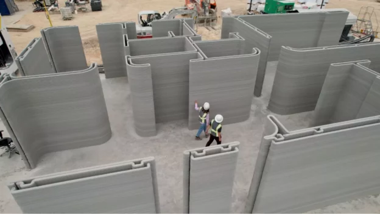

Más Información
La impresión 3D en la construcción ha cobrado más protagonismo que nunca. Según un informe de Exactitude Consulting, se espera que el mercado crezca de 503 millones de dólares en 2020 a unos 6.500 millones en 2029. Y como los lectores sabrán, ya hay numerosos proyectos en marcha, incluidas viviendas que se están habitando. Por ello, hemos decidido centrarnos en los numerosos fabricantes de impresoras 3D para la construcción que están impulsando este sector en auge. En la actualidad, existen diferentes tipos de impresoras 3D para la construcción, desde máquinas polares hasta impresoras montadas en pórticos o robots móviles. Hoy en día, son capaces de extruir hormigón que permite la construcción de diversas estructuras de distinto grado de complejidad, desde casas hasta puentes y oficinas. En el siguiente listado, ¡echamos un vistazo a los principales fabricantes de casas impresas en 3D del mercado!
Ir a Una pagina oficial que he encontrado.

